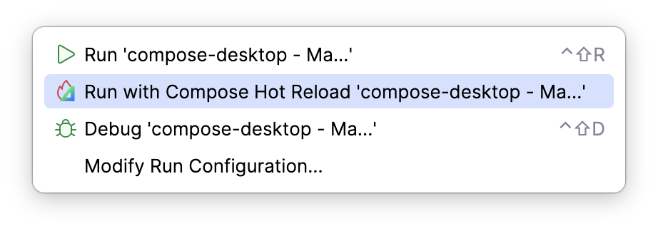

Compose Multiplatform¶
To enable Compose (with a compiler plugin and required dependencies), add the following configuration:
JVM Desktop:
product: jvm/app
dependencies:
# add Compose dependencies using a dependency catalog:
- $compose.desktop.currentOs
settings:
# enable Compose toolchain
compose: enabled
Android:
product: android/app
dependencies:
# add Compose dependencies using a dependency catalog:
- $compose.foundation
- $compose.material3
settings:
# enable Compose toolchain
compose: enabled
There is also a full form for enabling or disabling the Compose toolchain:
...
settings:
compose:
enabled: true
Also, you can specify the exact version of the Compose framework to use:
...
settings:
compose:
version: 1.5.10
Using multiplatform resources¶
Amper supports Compose Multiplatform resources.
The file layout in Amper is:
|-my-kmp-module/
| |-module.yaml
| |-src/ # your code is here
| | |-...
| |-composeResources/ # place your multiplatform resources in this folder
| | |-values/
| | | |-strings.xml
| | |-drawable/
| | | |-image.jpg
| |-...
Amper automatically generates the accessors for resources during the build and when working with code in the IDE.
Accessors are generated in a package that corresponds to the module name. All non-letter symbols are replaced with _.
In the given example where the module name is my-kmp-module, the package name for the generated resources
will be my_kmp_module.
Here is how to use the resources in the code:
import my_kmp_module.generated.resources.Res
import my_kmp_module.generated.resources.hello
// other imports
@Composable
private fun displayHelloText() {
BasicText(stringResource(Res.string.hello))
}
Read more about setting up and using compose resources in the documentation.
Compose Hot Reload (experimental)¶
Amper supports Compose Hot Reload, allowing you to see UI changes in real-time without restarting the application. This significantly improves the developer experience by shortening the feedback loop during UI development.
Configuration¶
To enable Compose Hot Reload set compose.experimental.hotReload to enabled:
settings:
compose:
enabled: true
experimental:
hotReload: enabled
When you run your application with Compose Hot Reload enabled:
- Amper automatically downloads and runs JetBrains Runtime to maximize hot-swap capabilities
- A Java agent for Compose Hot Reload is attached during execution
- A small Compose Hot Reload devtools icon appears next to the application window, indicating that the feature is active

IDE Integration¶
When running your app from the IDE, you can get automatic recompilation and reloading based on file system changes, using the Amper IntelliJ plugin.
To configure it, you don't have to do anything, the plugin will automatically detect the presence of the Compose Hot Reload and enable the feature.
When Compose Hot Reload is enabled, in the IDE you can see a special mode of running Amper application: 
DevelopmentEntryPoint¶
It's also possible to run specific composables as in the Compose Hot Reload mode. To do that, you need to put
@DevelopmentEntryPoint annotation on the composable function without parameters.
A clickable gutter icon will appear on the left side of the composable.

Current Limitations¶
- You need to make sure that
jvmis one of the platforms of the module. - Amper doesn't watch the file system, so automatic reloads are only available when using the IDE